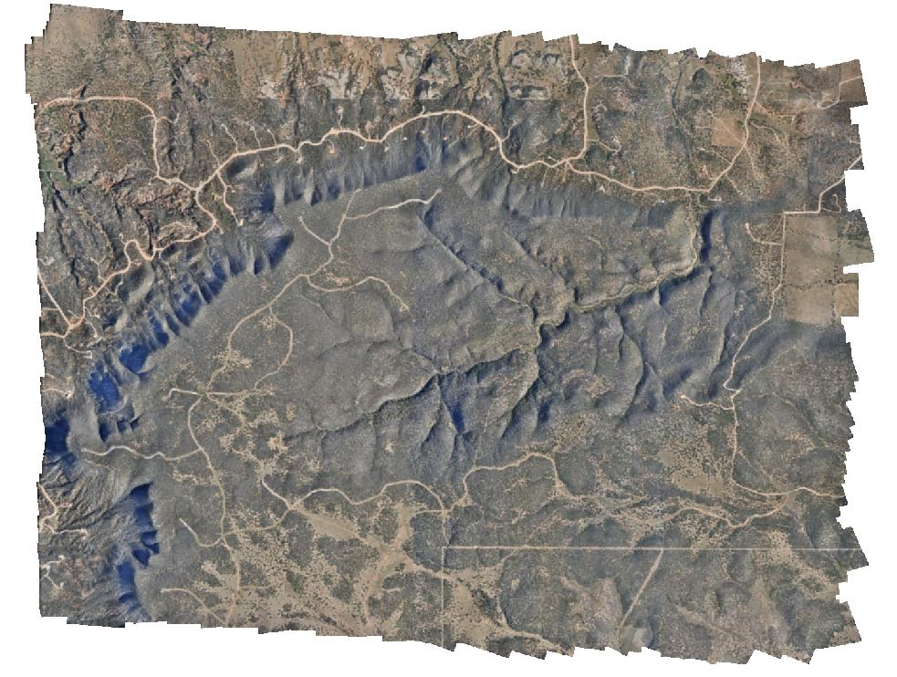

Deer Creek Plateau Digital Terrain Modeling

3D terrain modeling to support post-drought vegetation assessment
In 2014 and 2015, the GIScience and Environmental Management lab at the University of New Mexico collected multispectral aerial imagery of the Deer Creek Plateau, a long-term ecological monitoring site in central New Mexico. These data were used to assess pinon-juniper dieoff during and after a drought event. The original geometric registration of the orthomosaics and digital surface models (DSMs) generated from these imagery sets was found to be inadequate, so in 2019 I conducted two real-time kinematic (RTK) field surveys of pseudoinvariant natural features visible in the aerial imagery using a Trimble R10 GNSS system to improve the ground control. Subsequently, I re-processed the imagery in Agisoft Metashape Professional to produce new orthomosaic and DSMs for the two image years. The spatial resolution of the orthomosaics was 7cm and the DSMs was 26cm, with horizontal error +/- 5cm in the horizontal and +/- 20cm in the vertical. These products are available to the public upon request to the ASPIRE lab manager.